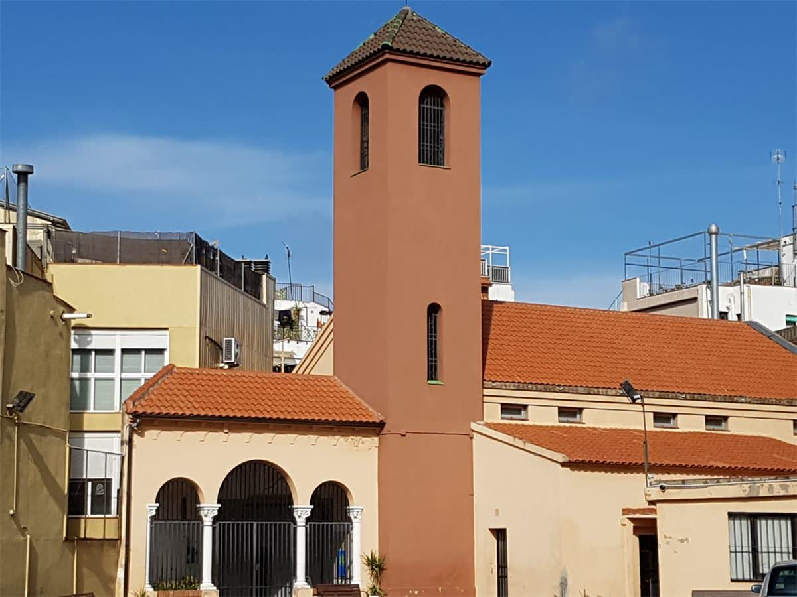
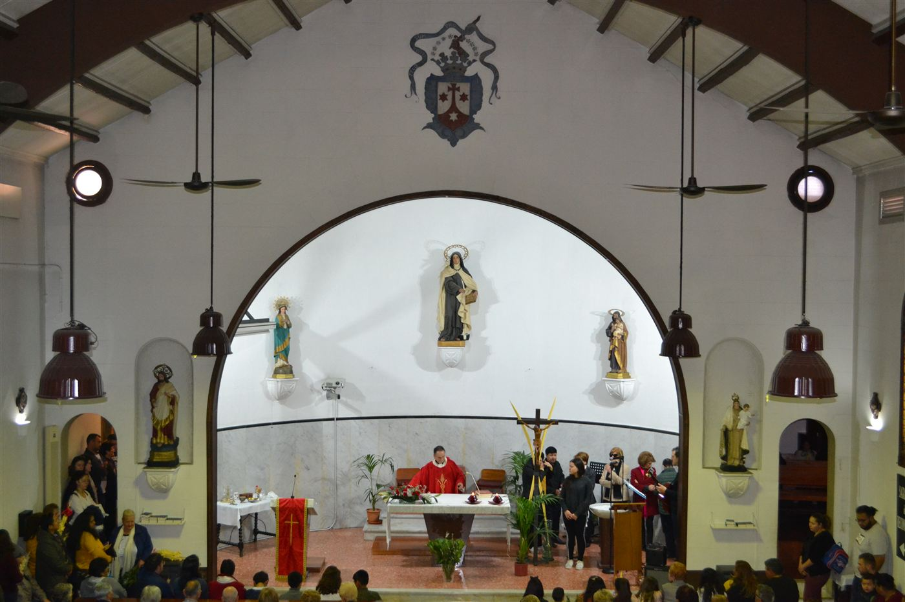
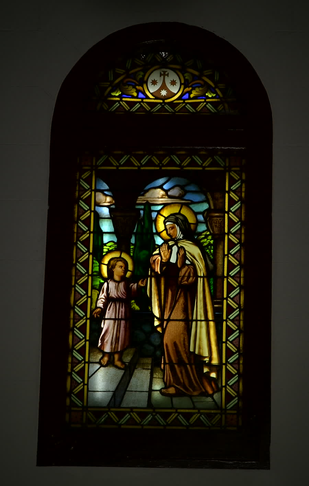
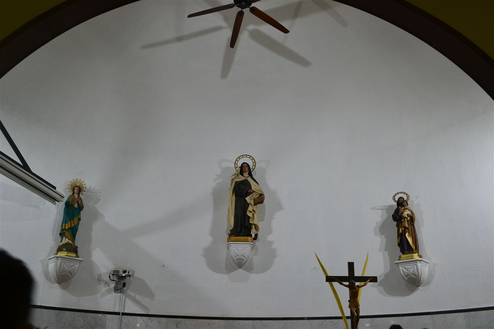
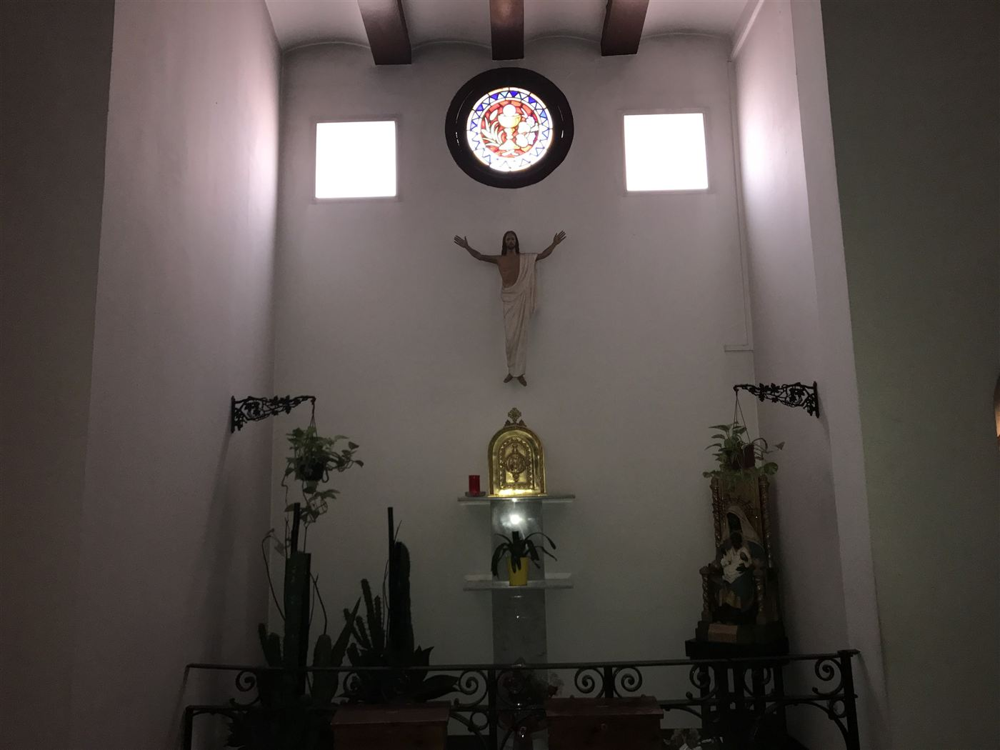
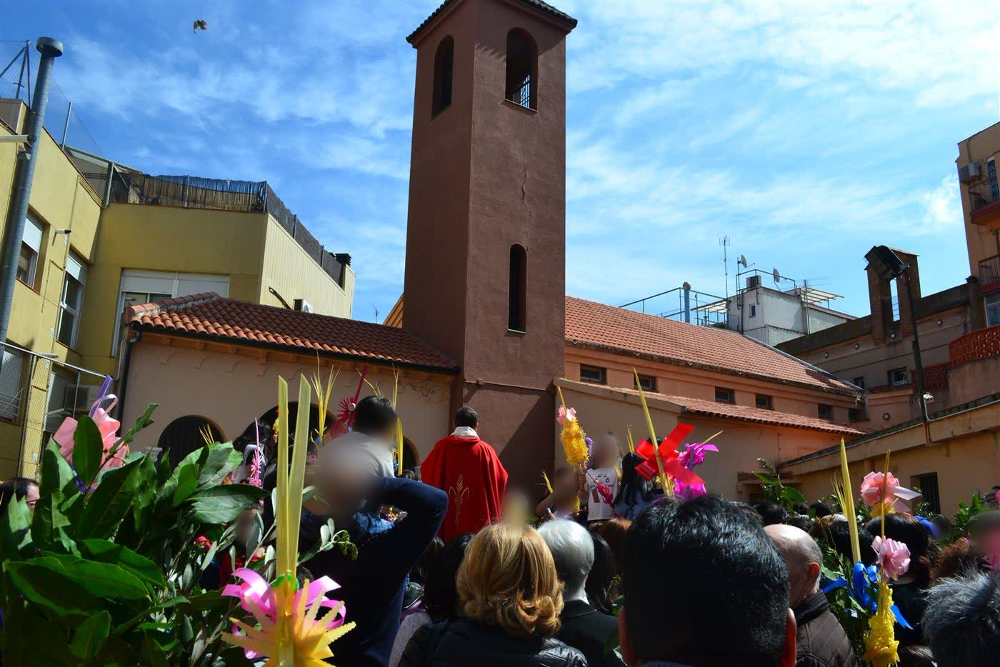
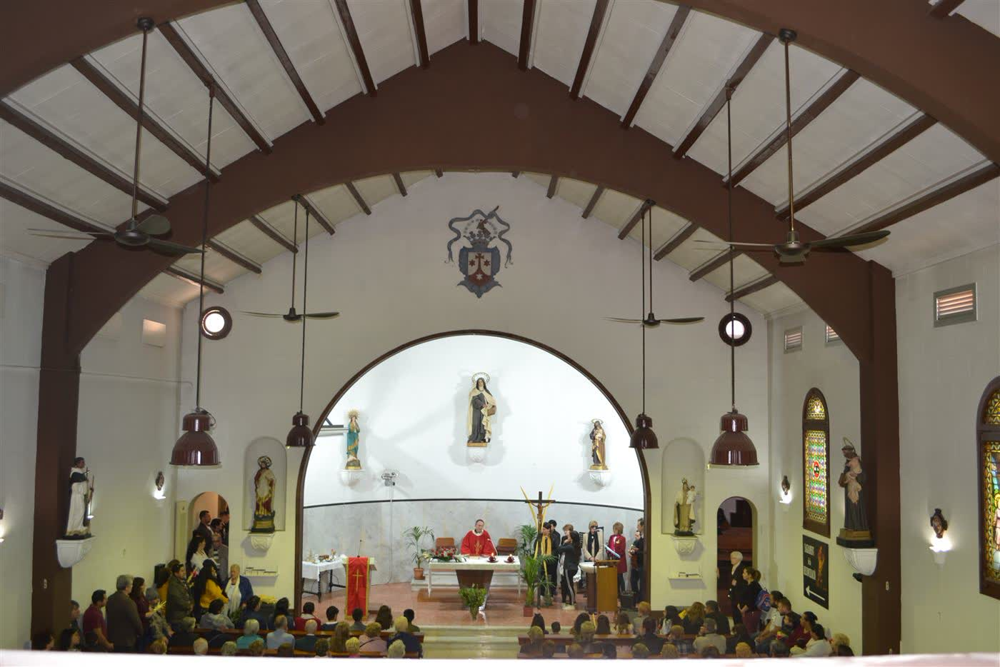
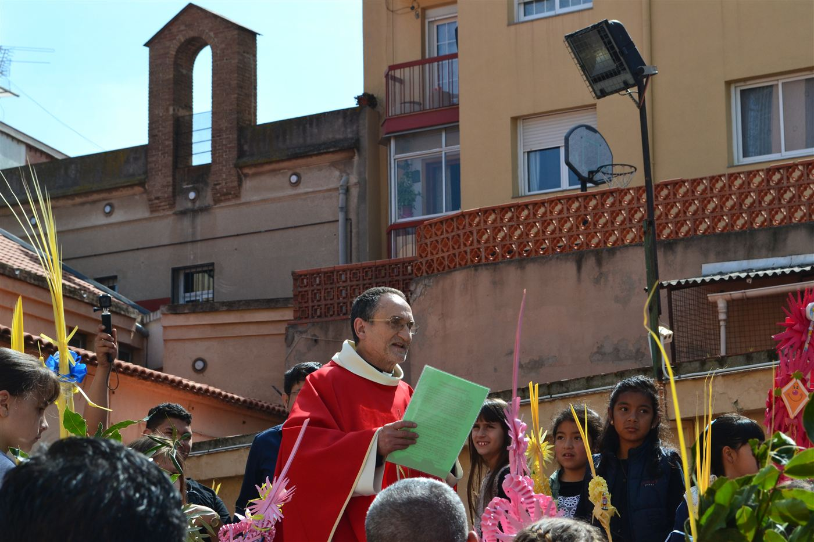

La Nostra Història
La parròquia de Santa Teresa de Jesús és al cor del Carmel, a Barcelona.
Des del primer moment la parròquia va estar molt integrada al barri, ja que va ser la seu d'una de les primeres cooperatives obreres del barri i d'una escola per a infants i adults.

Línia del temps
La primera pedra
Hem localitzat unes fotografies de la col·locació de la primera pedra de la nostra estimada parròquia, datades el 1923 (possiblement al mes de maig).
Construcció de l'església
L'església es va construir en terrenys de l'antiga finca de Can Grau (l'actual cruïlla entre Llobregós i Conca de Tremp) i era una tinença parroquial de Sant Joan d'Horta.
Benedicció del temple
Va ser beneïda l'octubre de 1928, tal com recull la ressenya de La Vanguardia del dia 20.
L'enfonsament del túnel
El febrer de 2005 la parròquia va ser al centre de totes les mirades, ja que es va veure afectada per l'infaust enfonsament del túnel de maniobres durant les obres del metro. El pati de l'església és just al davant, a l'altra banda del carrer, d'on es va formar el forat.
Un segle de vida al Carmel
Cent anys després de la seva construcció, la parròquia continua sent un punt de trobada del barri: la missa dominical amb cor gòspel, la catequesi d'infants i adolescents, Càritas, els grups de joves i de matrimonis, i una comunitat que segueix oberta a tothom.
Coneix la vida parroquial →La nostra església en imatges
Racons, celebracions i detalls d'un temple que acompanya el barri des de fa un segle. Fes clic en una foto per veure-la en gran.

La nau durant l'eucaristia
El vitrall de Santa Teresa
El presbiteri
La capella del Santíssim
Diumenge de Rams
La comunitat reunida
La benedicció dels ramsEstem recuperant l'arxiu històric: la col·locació de la primera pedra el 1923, la benedicció del 1928 i la vida del barri. Si tens fotografies, escriu-nos i les hi incorporarem.
Tens alguna pregunta?
Escriu-nos o passa pel despatx parroquial: els divendres a la tarda, i abans o després de cada missa.